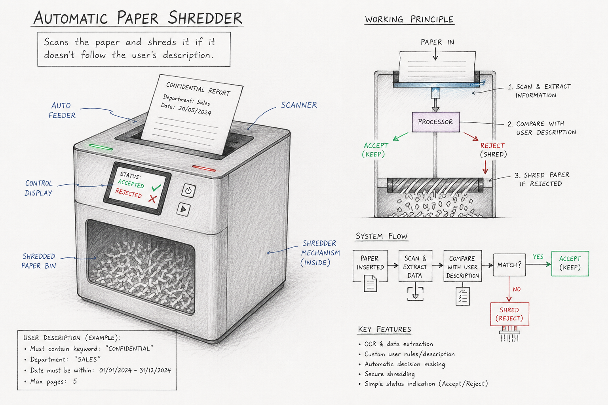

Watching my parents work made me realize how much paperwork they need to read and skim through. It also made me realize how more than 50% of these papers are straight up useless and waste time. To make this boring but essential part of work as efficient as possible (which also makes it as quick as possible) I have come up with a product which is basically an automatic paper shredder. The idea with this product is basically an AI skims through the paperwork and based on the keywords or the requirements the user provides decides to shred or keep the certain document. With this product the workload becomes less time taking and only important documents are left for people to read.

Image created by ChatGPT.